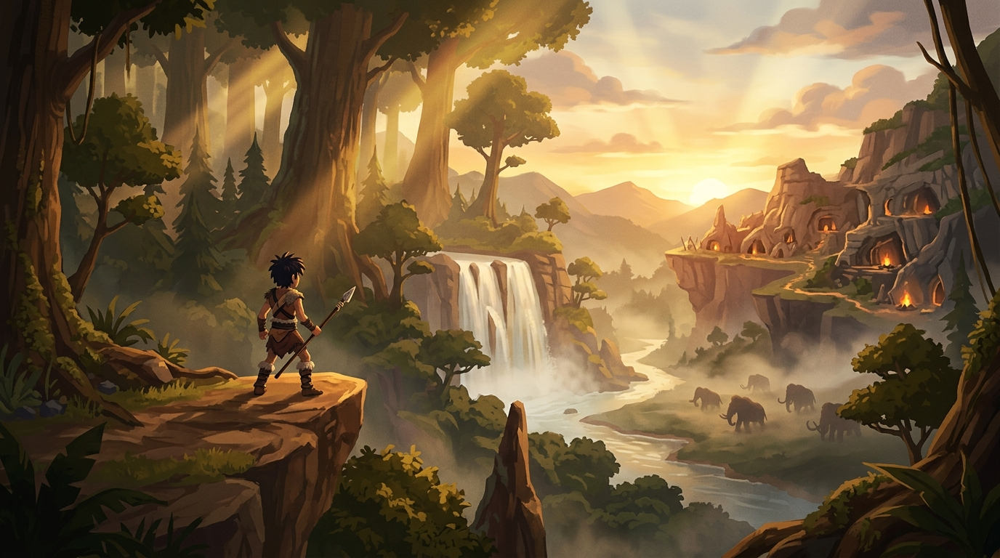

FIELD NOTES 014
SEPTEMBER 2026 · DEVELOPMENT
Building the First Valley
We started with a blank terrain and began sculpting the first playable prehistoric valley — balancing mountain silhouettes, river crossings, and dense brush lines for third-person stealth.